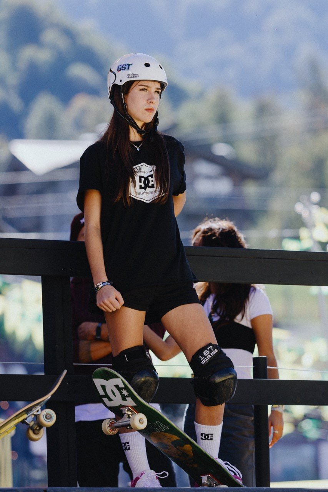
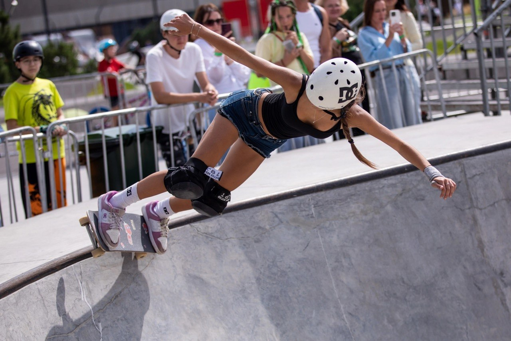
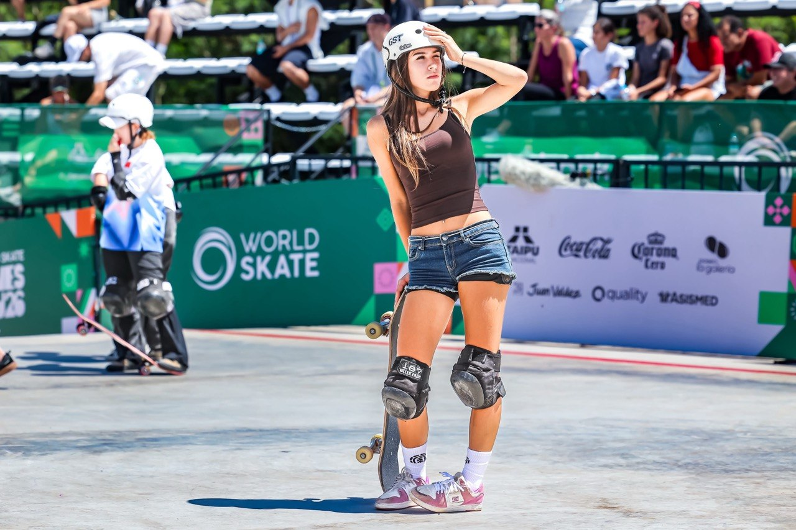
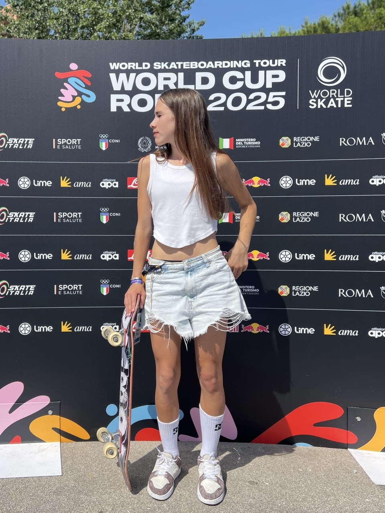
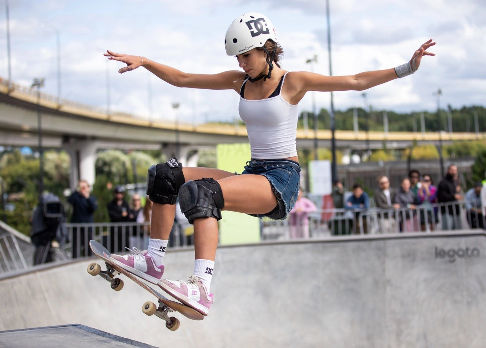
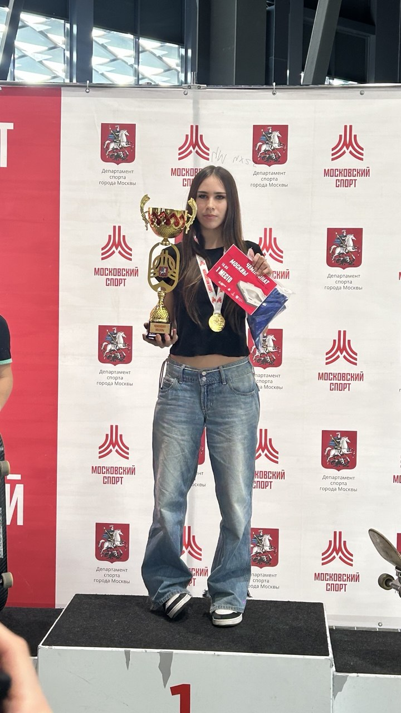
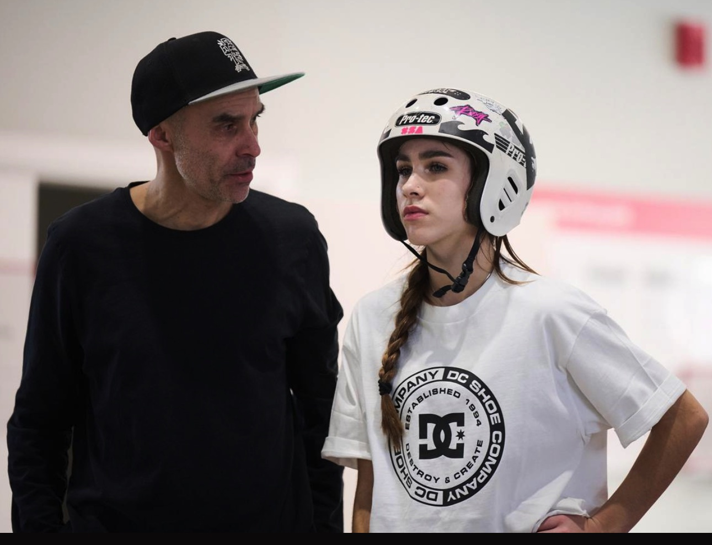
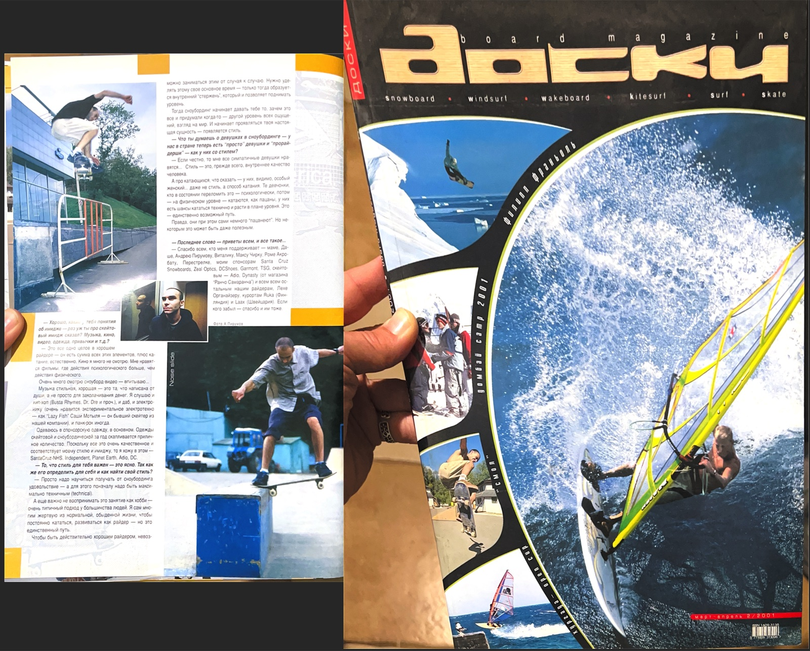
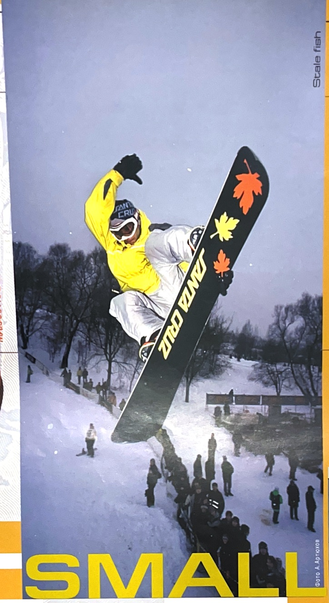
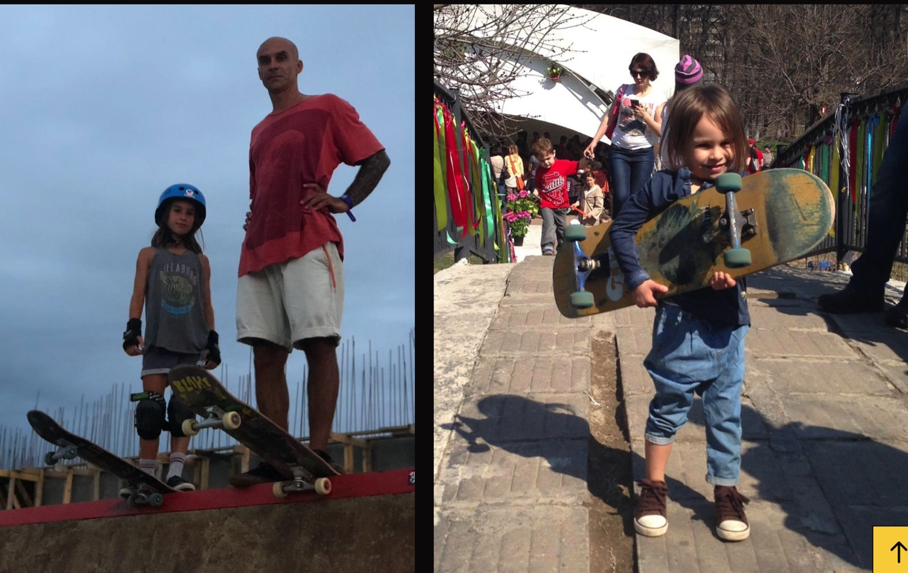

Москва · Скейтбординг · Парк16 лет · Мастер спорта России
Проект «Новая высота» в поддержку спортсменки
Вера
Навалихина
Трижды чемпионка России. Участница международных стартов. Следующая высота — борьба за место в олимпийском цикле LA 2028.
Трёхкратная чемпионка РоссииWorld SkateПаркМастер спорта РоссииLA 2028

01 / ВераКто такая Вера
С пяти лет —
на доске.
С девяти —
на пьедестале.
Вера Навалихина — российская скейтбордистка из Москвы, мастер спорта России и трёхкратная чемпионка страны в дисциплине «парк».
В девять лет она заняла второе место на Первенстве России среди спортсменок до 16 лет и третье — на Чемпионате России среди женщин. Победы в 2023, 2024 и 2025 годах стали продолжением нескольких лет стабильного роста.
История Веры в CRIT. ↗Спортивная история Веры Навалихиной
Шесть лет спортивного роста
в скейтбординге.
От первых медалей чемпионата России в 2020 году — до международных стартов World Skate в 2026-м.

- Первый большой сезон
Серебро Первенства России до 16 лет и бронза Чемпионата России.
- Закрепление результата
Два вторых места на чемпионатах России и серебро Всероссийской Спартакиады среди сильнейших спортсменов 2022.
- Три чемпионских титула
Первое место на чемпионате России три года подряд.
- Сан‑Паулу, Бразилия
World Skateboarding Championships — международный старт в дисциплине «парк».
- Золото Спартакиады народов России
Первое место в дисциплине «парк» — 35,33 балла.
- Международный уровень
World Skate Tour, World Cup Rome и World Skate Games.
Международный опыт
Мир становится
новой тренировочной
площадкой.


Rome 2025Выход в четвертьфинал28-е место в открытой квалификации
Rome 202636,48 балла59-е место в итоговом протоколе
Asunción 202650,99 балла41-е место на World Skate Games
Скейтбординг на Олимпийских играх
Из уличной культуры —
на олимпийскую арену.
Скейтбординг вошёл в олимпийскую программу совсем недавно. Для российского спорта LA 2028 может стать первой возможностью выйти на олимпийский старт в этой дисциплине.
МОК включает скейтбординг в программу Игр
Решение открыло олимпийский путь для дисциплин «парк» и «стрит» и признало культуру, выросшую вне традиционной спортивной системы.
Решение МОК ↗Олимпийский дебют
На первых Играх в скейтбординге выступили 80 спортсменов. Российские райдеры олимпийскую квалификацию не прошли.
Второй олимпийский цикл
Скейтбординг закрепился в программе Игр, но спортсменов из России среди участников этой дисциплины снова не было.
Шанс открыть российскую олимпийскую историю
В июле 2026 года МОК снял прежние специальные рекомендации для участия российских спортсменов; квалификация к LA 2028 уже началась. Решение о национальной символике на Играх будет принято позднее.
Актуальное решение МОК ↗Почему Вера
У Веры сильная стартовая позиция, чтобы бороться за LA 2028.
Ей 16 лет. За шесть соревновательных сезонов она прошла путь от первых медалей до трёх титулов чемпионки России и международных стартов World Skate. Впереди — время для усиления техники, рейтинга и опыта на соревнованиях мирового уровня.
Её участие важно не только как личный результат: это возможность впервые вывести российскую школу скейтбординга на олимпийскую арену и показать новое поколение спортсменов из России.

Олимпийский трек
Стратегия роста
спортсменки.
Задача программы — последовательно поднять Веру в мировом рейтинге с учётом страновых квот, войти в число 22 участниц квалификационных стартов и подойти к Олимпиаде в зоне отбора.
- 44место сейчасс учётом страновых квот
- 39место к началу 2028промежуточная цель
- 19место к началу Олимпиадызона олимпийского отбора
- TOP 15на Олимпиадецель выступления
Программа подготовки
Одна линия.
Два сезона.
Тренировочные лагеря, раскатка соревновательных боулов и ключевые старты собраны в один маршрут к LA 2028. Локации этапов World Skate уточняются после публикации официального календаря.
ПодготовкаСоревнованияКонтрольная точка
LVLUP Academy
Тренировочный лагерь
Китай
Тренировочный лагерь
Боул Кубка мира
Раскатка
Кубок мира
Соревновательный старт
LVLUP Academy
Тренировочный лагерь · Лос-Анджелес
Боул чемпионата мира
Тренировочный лагерь
Чемпионат мира
Park
Рейтинг
Завершение первой фазы отбора
Токио
Предстартовый лагерь
Токио
Квалификационный старт
Северная Америка
Тренировочный лагерь
Монреаль
Квалификационный старт
Орландо
Квалификационный старт
Лос-Анджелес
Предолимпийский лагерь
Women’s Park
Олимпийский старт
Календарь 2028 — рабочий план проекта; даты и локации будут синхронизированы с официальным регламентом квалификации.
Тренировки у олимпийского тренера
Три недели
в LVLUP Academy.
Первый сбор запланирован на январь 2027 года. Вера получила приглашение на трёхнедельную High Performance Academy Program в Калифорнии.
В фокусе — техника и линии в боуле, новые элементы, стабильность заездов и подготовка к международным соревнованиям. С Верой готовы работать Trevor Ward и Leonardo Ruiz.
Тревор Уорд (Trevor Ward) → Ариса Трю
Тревор Уорд (Trevor Ward) — тренер Арисы Трю, олимпийской чемпионки Парижа 2024 в женском парке. Это прямой опыт подготовки спортсменки к победе на главном старте.
Профиль Arisa Trew в AOC ↗“We would love to be part of your journey towards the World Championships and your Olympic aspirations.”
Из приглашения LVLUP Academy · Trevor Ward и Leonardo Ruiz

Предложение партнёрам
Стать частью
олимпийского пути Веры.
Партнёр программы помогает Вере получить подготовку мирового уровня и выходить на международные старты. Бренд получает содержательную связь с молодой чемпионкой, российским экстремальным спортом и аудиторией, которая ценит смелость, рост и действие.
01
Репутационный вклад в развитие российского спорта
02
Совместные истории, фото, видео и партнёрские коммуникации
03
Прозрачная отчётность по этапам программы и результатам
Проект поддержали
Партнёры
Новой высоты.
О проекте «Новая высота»
Из андеграунда —
в олимпийский спорт.
Из поколения райдеров — в поколение чемпионов.
Российская культура доски выросла в 1990-е из независимой сцены, первых райдеров, самодельных спотов и сообществ. Сегодня скейтбординг входит в олимпийскую программу, а опыт первого поколения передаётся детям.
Отец Веры Михаил «Смол» Навалихин — райдер первой волны и, по данным «Советского спорта», первый спонсируемый скейтер России. В начале 2000‑х он выступал в сноубордических дисциплинах, писал для журнала «Доски» разборы трюков и работал со Santa Cruz, 686, Vans и GMC. Позже Михаил стал тренером и одним из создателей семейных выездных лагерей.
Мама Веры Елена создала детскую школу Kidsproriders и ведёт спортивный маршрут дочери. Вера выросла внутри этой культуры и продолжает семейную историю на чемпионатах России и международных стартах.
«Новая высота» помогает культуре экстремального спорта становиться системой: соединяет людей и сообщества с бизнесом, государственными и муниципальными институтами. Мы верим, что Россия может стать одним из мировых лидеров в экстремальных видах спорта.




Люди «Новой высоты»
Команда
проекта.
Елена
Баскова
Мама и менеджер Веры Навалихиной, куратор трека развития.
Telegram @lulenabas ↗Анастасия
Сафонова
Куратор Веры от Бюро социальных проектов «Новая высота».
Коротко о главном
Вопросы
и ответы
Кто такая Вера Навалихина?
Российская скейтбордистка из Москвы, мастер спорта России и трёхкратная чемпионка России в дисциплине «парк».
Выступали ли российские скейтбордисты на Олимпиаде?
Нет. На олимпийском дебюте в Токио и на Играх в Париже спортсменов из России в скейтбординге не было. LA 2028 может стать первым олимпийским стартом для российской школы скейтбординга.
Какова цель программы?
Пройти международный квалификационный цикл, бороться за олимпийскую квоту и представить российскую школу скейтбординга на LA 2028.
Что является первым этапом?
Трёхнедельная высокоинтенсивная подготовка в Калифорнии с работой над техникой, линиями, новыми элементами и стабильностью заездов.
Как стать партнёром?
Напишите Анастасии в Telegram — она расскажет о программе, вариантах участия и условиях партнёрства.